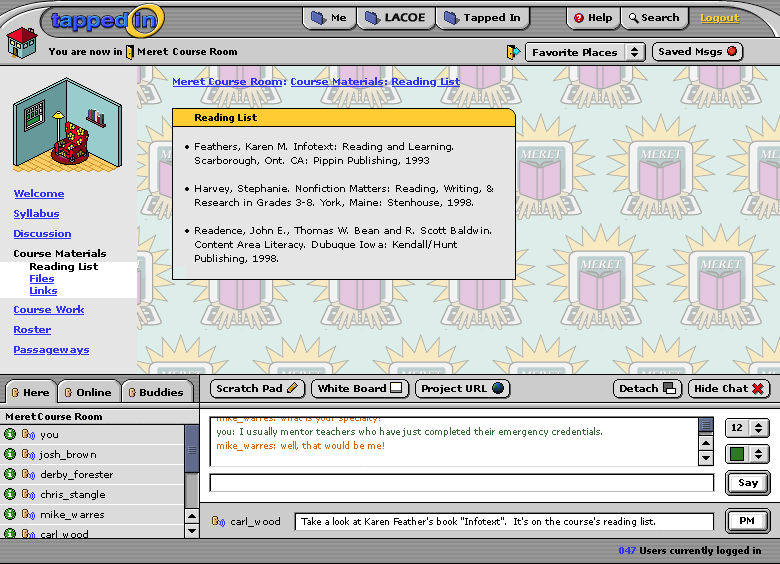

Wow. As one of my students put it after viewing the demo, "I feel like I just walked into the cockpit of a commercial jet. It's so busy with information and buttons all over the console." -- I have to agree with her. It struck me as overwhelming, scary, I was distracted. I couldn't find stuff and my mind shut down and didn't want to try.
Now it's true that I hadn't been following the immediately preceding interations, and I just walked in to #19 cold. But then, so will many new users. I was thinking that there might be a need for some sort of training wheels, or in a more sophisticated argot, faded prompts. Maybe there is a beginners' version with some elements grayed out, so the beginners can see what's possible, but really only need to deal with the stuff on the beginning level. I imagine that would be basic navigation and chat. Maybe users could set their own user level, or turn features on and off.
Also, everything is scattered about. It's not clear to me that there are thematic units of meaning that determine where I might look on teh screen to find the buttons for different functions.
Why would you 'hide chat' but leave it on, i.e., stay in it? Why not log out then rathr than 'hide' it? What's the function that you're trying to support there?
I missed what's supposed to be in or under the tab marked Tapped In at the top. Does that take you to reception? What action does it support?
When I SEARCH PLACES am I searching for places (why? to join them?) or am I searching for stuff IN particular places (why would place matter, why wouldn't I just search for the stuff?)
I am struck by a lot of actionability in the window that may or may not be (a) a real and desireable or common functional thing to do, or (b) entered into from the particular viewpoint or context given. My "search" question (and the others) above try to raise a few of those concerns.
I really believe less is more. You've got a very complicated console in front of the user, between the user and the interactions s/he might be trying to accomplish. This worries me. It's like the procenium arch. It really reminds you that this isn't reality, it really frames your point of view, and like the arch, tends to put you out in the audience rather than in the action on the stage (such as you might get in a theatre in the round). I get an image of the little man behind the curtain in the wizard of oz.
Maybe we've tried to cram too much into the interface. We need to give back to the user.
Sorry to be a crank.
--- LindaThese comps correspond to a list of requests sent in by Patti, namely moving "saved messages" to the top, making the push-pins on sub-pages go away (now it's just a graphical table cell), changing "close chat" to "hide chat", adding "project URL", and getting rid of nav options but adding explanatory text when the chat is closed.
I'm actually not that excited about the last one; it just seems awkward to me- and I think the idea of them being greyed out works better from a UI standpoint. If the decision is to have text, I think it should be briefer than what is shown. Is "Go Live" that confusing on its own? Anyway- here are the images. Enjoy! (for once, not a spec document to read!)
